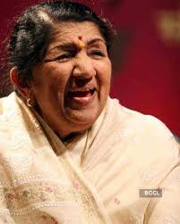

Lata Mangeshkar (1929-2022)

About the Nightingale of India
Lata Mangeshkar was born in 1929, the eldest daughter of Deenanath Mangeshkar, a Marathi and Konkani musician and his wife Shevanti in Indore.
A legendary playback singer in Indian movies, she recorded over 30,000 songs in 14 Indian languages, making her the most recorded voice in history.
Mentioned in the song "Brimful of Asha" by Cornershop. (The title refers to her sister, Asha Bhosle, who is also mentioned in the song.).
In an interview,Lata Mangeshkar herself disclosed on her 84th birthday in September,2013,"Ghulam Haider is truly my Godfather.It was his confidence in me that he fought for me to tuck me into the Hindi Film Industry which otherwise had initially rejected me.
Remembering her early rejection,Lata once said," Ghulam Haider was the first music director who showed complete faith in my talent.He introduced me to many film producers including S. Mukherji,a big name in film production,but when he said my voice was "too thin" to use in his film,Ghulam Haider was furious.Hence,finally he convinced Bombay Talkies,a banner bigger than S. Mukherji and introduced me through their movie Majboor (1948).Lata's first big breakthrough film song,was "Dil mera tora,mujhe kaheen ka na chhora teray pyaar ne" lyrics by Nazim Panipati,composed by Ghulam Haider.
She was awarded the Bharat Ratna, the highest civilian honor by the Government of India.
Her contribution to Indian music industry in a career spanning seven decades gained her honorific titles such as the Nightingale of India, Voice of the Millennium and Queen of Melody.
Mangeshkar died on 6 February 2022, from multiple organ failure after contracting COVID-19 and undergoing 28 days of treatment at the Breach Candy Hospital, Mumbai, India.
The Government of India announced a two-day national mourning and that the National Flag will fly at half-mast from February 6 to 7 throughout India in her respect.